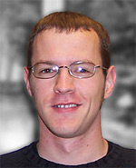

Luke Manning, PhD
Areas of Study
- Philosophy of Language
- Metaphysics
- Aesthetics
Info
Research Abstract
I’m working on the metaphysics of fictional characters. I guess you could say I’m part of the growing “creationist” movement about fictional entities (with Kripke, Salmon, Thomasson, etc.), though my position is also influenced by “commonsense realists” (about other topics) like McDowell and Putnam, and accounts of fiction that are particularly sensitive to aesthetic and critical issues (e.g., Walton, Lamarque). Aside from that, I occasionally work on the metaphysics of modality and mind, the metaphysics and value theory of art, and issues in singular reference and thought. Some of my main influences are Wittgenstein, Putnam, Kaplan, Kripke, and McDowell.
Personal
Music (especially metal)
Comics (especially the works of Jack Kirby, Chris Claremont, Frank Miller, and Bill Sienkiewicz)
Film (“serious” movies as well as “B” movies)